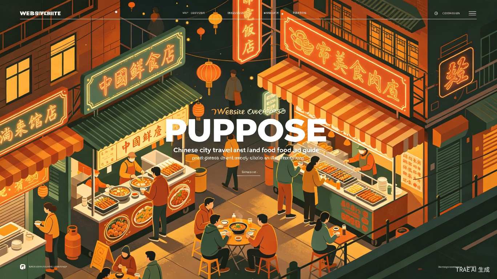

「全国地市必吃地图」是一本随四季流转而更新的城市探索手册。我们以"好吃、好玩、好耍、好朋友"四大榜单为核心，为异地旅客与本地玩家提供最具烟火气的出行指引。春赏花、夏避暑、秋品鲜、冬暖胃——每个季度都会更换推荐榜单，深挖各地藏在街巷里的地道美味、小众景点、特色娱乐与值得结交的本地达人。不止于攻略，更是一份有温度、有态度的城市生活图鉴，让每一次出发都充满期待，每一座城市都值得被重新发现。
春季鳜鱼最为肥美，外酥里嫩，酸甜适口，是苏州菜系的巅峰之作。
时令鲜美初春香椿嫩芽上市，搭配土鸡蛋翻炒，香气扑鼻，一口吃下整个春天。
春季限定明前龙井与鲜活河虾的完美结合，茶香清雅，虾肉弹嫩，江南春味的代表。
茶香清雅春季猪肉最为鲜嫩，无锡酱排骨色泽酱红、肉质酥烂，甜咸适中，是江南名菜。
江南名菜春季大黄鱼最肥美，搭配宁波雪里蕻，鲜美无比，是东海之滨的春日馈赠。
东海鲜味春季鲩鱼最为肥美，顺德鱼生薄如蝉翼，搭配十余种配料，一口吃下岭南春天。
岭南鲜味万株樱花同时绽放，粉色花海与湖水相映，是春日里最浪漫的打卡地。
浪漫花海金黄花田铺满梯田，白墙黛瓦点缀其间，构成一幅绝美的田园画卷。
田园风光雪山脚下野桃花盛开，粉白花海与湛蓝天空形成强烈对比，宛如仙境。
高原秘境世界三大赏樱胜地之一，三万株樱花同时绽放，夜樱更是如梦如幻。
赏樱圣地伊河两岸柳绿花红，千年石窟在春光中更显庄严，历史与自然的交融。
历史春光春城昆明樱花盛开，圆通山公园花海如潮，四季如春的最佳诠释。
春城花海漫天奇形怪状的风筝翱翔天际，可亲手放飞，感受春风与自由。
户外狂欢傣族新年狂欢，水花四溅中洗去旧岁烦恼，迎接崭新的一年。
民族狂欢国色天香牡丹盛开，古装巡游、诗词大会，沉浸式体验盛唐风华。
文化盛宴大型实景演出《大宋·东京梦华》春季开演，穿越千年感受北宋繁华。
实景演艺春季灵山梵宫祈福法会，拈花湾禅意小镇花开如海，心灵净化之旅。
禅意之旅广西最盛大的民族节日，对歌、抛绣球、五色糯米饭，体验壮族风情。
民族节庆在人民公园开了三十年茶馆，知道哪条巷子藏着最正宗的担担面。
美食向导苍山洱海间的生活家，能带你找到游客从未涉足的隐秘角落。
在地生活家对十三朝古都了如指掌，骑行城墙一圈，历史故事讲不停。
历史通南音世家传人，带你听古乐、品茶道、逛古城，感受闽南慢生活。
非遗传人画了一辈子牡丹的民间艺人，知道哪片花田开得最艳、哪个角度最出片。
民间艺人鼋头渚官方合作摄影师，带你避开人潮，找到最佳赏樱机位。
摄影达人夏日消暑绝配，酸辣爽口的凉皮配上酥香肉夹馍，解暑又解馋。
消暑神器闽南传统甜品，红豆、仙草、芋圆、西瓜等配料丰富，冰凉爽口。
清凉甜品火锅后的最佳拍档，红糖冰粉配凉虾，一口降温十度。
火锅伴侣顺德名点，水牛奶制作，上层奶皮甘香，下层奶香浓郁，冰镇后消暑一绝。
广式甜品西北传统冷饮，燕麦发酵而成，酸甜可口，清热解暑，兰州人夏日必备。
西北冷饮海南特色甜品，椰奶配红豆、绿豆、薏米、芋圆等十余种配料，清凉解暑。
海南特色亚洲第一大瀑布，水雾弥漫如仙境，夏季水量最盛，气势磅礴。
清凉壮观北方最佳海滨浴场，细软沙滩与清澈海水，夏日避暑首选。
海滨度假盛夏时节仍能触摸积雪，冰川公园与蓝月谷，清凉与壮美并存。
雪山避暑夏季海滨清凉宜人，蓬莱阁云雾缭绕，海鲜肥美，北方避暑佳地。
海滨仙境夏季水量充沛，三峡大坝泄洪壮观，西陵峡清凉幽谷，避暑研学两相宜。
壮丽工程夏季草原碧绿、瓜果飘香，天山天池湖水清澈，避暑胜地。
西域清凉全球最大啤酒盛会，海鲜烧烤配冰啤，夏日夜晚的最嗨打开方式。
啤酒狂欢草原上的传统盛会，摔跤、赛马、射箭，体验蒙古族豪迈风情。
草原盛会湘江边的音乐盛宴，年轻、热血、自由，属于夏天的青春记忆。
音乐现场草原上的摇滚盛宴，马头琴与电吉他碰撞，在星空下尽情狂欢。
草原摇滚广东最佳潜水地，夏季海水清澈见底，珊瑚礁与热带鱼群环绕。
潜水胜地东海明珠，夏季带鱼、黄鱼成群，体验渔民生活，收获满满。
海岛垂钓后海村资深浪人，带你从菜鸟到站立，感受海浪的力量。
冲浪达人漓江上撑了四十年竹筏，知道哪段江面倒影最美、哪处浅滩最趣。
山水向导师大夜市里的活地图，哪家烤冷面最正宗、哪杯格瓦斯最地道，一问便知。
夜市通啤酒节期间最忙的掌柜，知道哪家散啤最新鲜、哪盘蛤蜊最肥美。
啤酒通从小在国际大巴扎长大，带你找到最甜的哈密瓜、最香的烤包子。
西域向导长岛渔家乐二十年掌柜，凌晨带你出海，现捕现吃最新鲜的海鲜。
渔家掌柜金秋十月蟹正肥，膏满黄肥，蘸姜醋细品，是秋天最奢侈的享受。
时令至尊秋风起，涮肉香。铜锅炭火，清汤锅底，现切羊肉涮三秒即食。
暖身必备秋季虾尾最为饱满，麻辣鲜香，配上一杯茶颜悦色，秋日夜晚的完美组合。
麻辣鲜香东海开渔后梭子蟹最肥美，清蒸保留原汁原味，秋季海鲜之王。
东海鲜味秋季兔肉最为紧实，成都兔头麻辣入味，啃起来回味无穷。
川味经典山西秋季传统美食，羊杂配粉条，汤鲜味浓，暖胃又暖心。
山西味道漫山红遍，层林尽染，秋日的香山是北京最美的色彩盛宴。
红叶盛宴神的后花园，白桦林金黄一片，湖水碧蓝如镜，摄影师的天堂。
摄影圣地六朝古都的秋意，古寺钟声与漫山红叶，历史与自然交融。
古刹秋韵千年银杏树金黄满枝，唐太宗手植古树，秋日最禅意的打卡地。
千年银杏江南水乡秋色正浓，烟雨长廊、石桥倒影，一幅流动的水墨画。
水乡秋色高原湖泊环绕红枫林，秋日层林尽染，湖光山色美不胜收。
高原秋景见证千年窑火，亲手拉坯制陶，感受泥与火的艺术蜕变。
手工体验江南水乡里的艺术狂欢，街头巷尾皆是舞台，文艺青年的朝圣地。
文艺盛宴金色稻浪层层叠叠，壮族同胞庆丰收，参与一场大地上的狂欢。
丰收庆典秋季绍兴黄酒开酿，古越龙山酒窖探秘，品鉴二十年陈酿。
黄酒文化秋季夜场灯光秀璀璨，万圣节主题活动惊险刺激，适合全家出游。
主题乐园秋季剧组拍摄旺季，偶遇明星几率最高，体验一日穿越千年。
影视穿越狮峰山下的守茶人，秋茶采摘时节，邀你品茗论道，讲述茶山故事。
茶道传人对壁画故事如数家珍，带你读懂千年石窟里的色彩与信仰。
文化使者本地吃货一枚，知道哪家火锅店不用排队、哪种蘸料最绝配。
吃货联盟土生土长的北京人，知道哪条胡同藏着最正宗的炸酱面、哪家卤煮最地道。
胡同通摇橹船上的水乡歌者，会唱越剧、讲古镇故事，带你走最少人的水路。
水乡歌者苗家酸汤鱼第三代传人，教你辨别正宗红酸汤，品尝最地道的苗家风味。
苗家大厨冬日里最温暖的仪式，清汤锅底涮海鲜牛肉，围炉而坐，热气腾腾。
暖心锅物东北冬日硬菜，柴火灶大铁锅，鹅肉炖得酥烂，玉米饼贴锅边。
硬核暖身滚烫鸡汤现场浇入，薄如蝉翼的肉片瞬间烫熟，冬日里的温暖慰藉。
汤鲜味美冬日重庆人聚会的标配，九宫格锅底麻辣鲜香，毛肚鸭肠涮起来。
麻辣暖身冬季热腾腾的包子最诱人，天津狗不理十八个褶，皮薄馅大汤汁多。
津门名吃冬日清晨一碗热腾腾的牛肉面，一清二白三红四绿五黄，暖心又暖胃。
西北暖食冰雕城堡在灯光下璀璨夺目，滑梯、冰灯、雪雕，冬日童话王国。
冰雪童话雪山环绕的天池结冰，银装素裹，静谧而神圣，冬日里的极致纯净。
雪域仙境当北方冰天雪地时，三亚依然阳光明媚，冬日里的夏日时光。
避寒天堂冬季温暖如春的珠海，长隆海洋王国鲸鲨馆、企鹅馆，亲子游首选。
亲子乐园城市中的滑雪场，冬季雪质优良，适合初学者和家庭亲子滑雪体验。
城市滑雪冬季红色旅游热门地，西柏坡纪念馆重温革命历史，接受精神洗礼。
红色旅游世界四大冰雪节之一，巨型冰雕、雪上项目、冬泳表演，冬日狂欢。
冰雪狂欢冬奥圣地，专业雪道与完善设施，从初学者到高手都能找到乐趣。
滑雪胜地闽南传统年俗最浓郁之地，踩街、庙会、花灯，感受最地道的中国年。
年味浓浓棋盘山冰雪大世界，冰雕雪雕与灯光秀结合，东北冬日欢乐聚集地。
冰雪欢乐冬季环海南岛骑行最佳时节，椰风海韵中感受热带岛屿的慢生活。
海岛骑行冬季贺兰山雪景壮美，岩画在白雪映衬下更显神秘，小众文化之旅。
岩画探秘从业二十年的冰雕匠人，能教你亲手雕刻一块属于自己的冰灯。
冰雪艺术家三代传承的老火锅秘方，带你吃出重庆火锅的精髓与门道。
火锅宗师冬日拉萨阳光最暖，扎西带你转经、喝酥油茶，感受高原的虔诚与宁静。
高原向导茶楼点心部三十年老师傅，知道哪笼虾饺最鲜、哪碗艇仔粥最绵。
早茶师傅退役运动员出身，单板双板全能，带你安全解锁滑雪新技能。
滑雪教练外伶仃岛民宿老板，知道哪片沙滩最私密、哪个角度日落最美。
海岛主人综合美团、去哪儿、飞猪、携程及文旅部数据，展示60个热门城市在春夏秋冬四季的旅游热度分布。颜色越深代表该城市在该季节越热门。